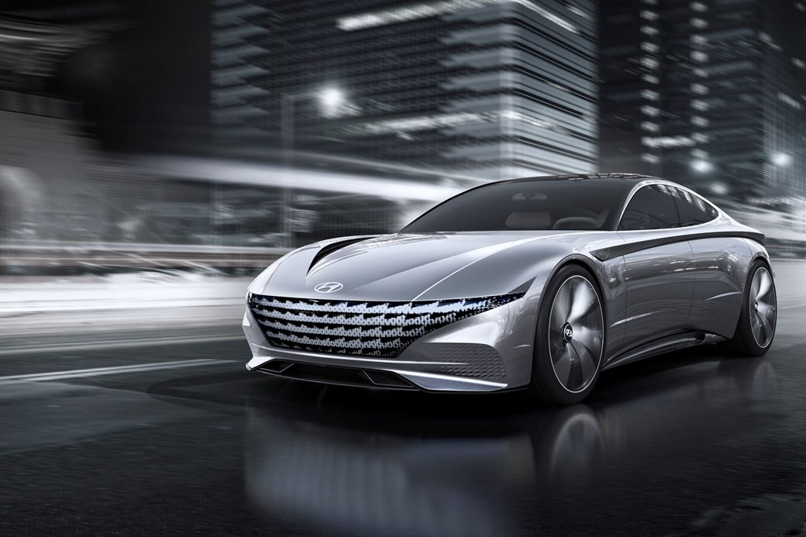
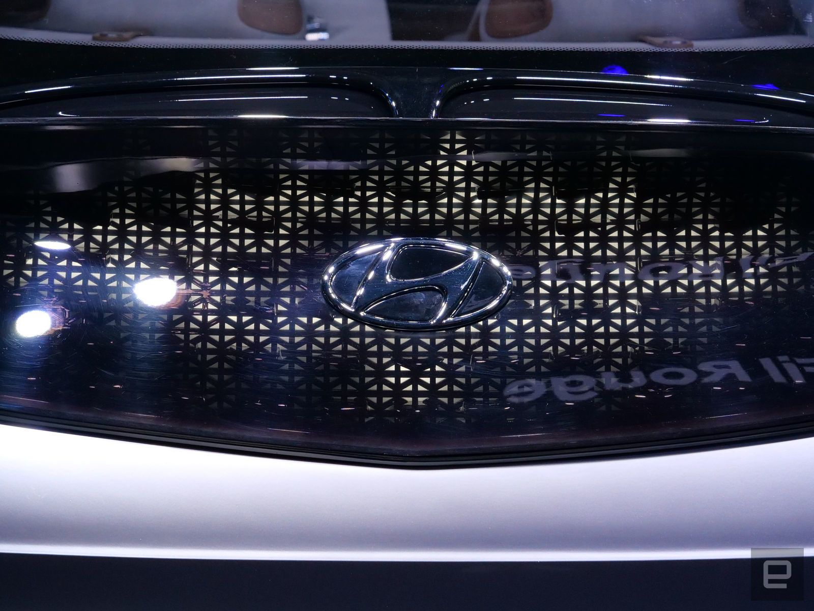
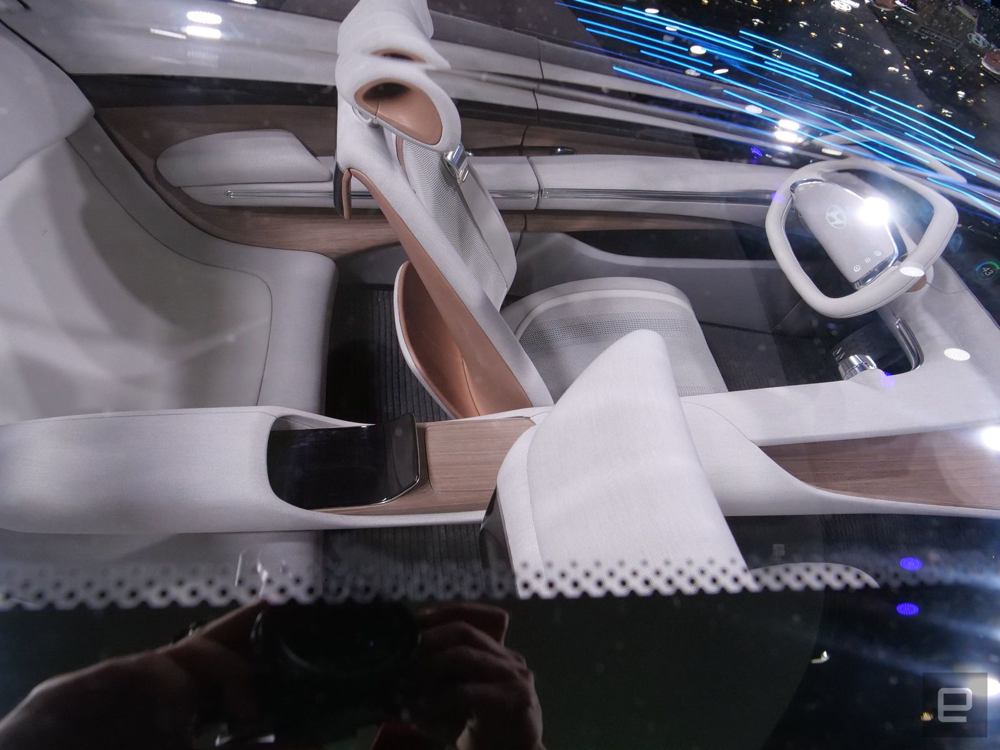

Hyundai has taken the covers off its latest concept, named Le Fil Rouge, at the 2018 Geneva motor show.
The concept is a pointer to the future of all Hyundai design, regardless of whether it’s an SUV, saloon or hatch. The Le Fil Rouge concept is the first to use the new, cringe-inducing ‘Sensuous Sportiness’ design philosophy. 
Le Fil Rouge is low and wide, and comes with an enormous grille at the front end. The proportions are similar to that of the Mazda Vision Coupe, and displays something Hyundai calls ‘Light Architecture’, which ‘generates a dynamic look and forward motion effect’ – whatever that means.
Luc Donckerwolke, Executive VP of Hyundai’s design centre calls the new concept ‘a reinterpretation of Hyundai’s design DNA that originated from the Hyundai Coupe Concept in 1974.’
The doors open coach-style, with the rears opening backward to reveal an interior festooned with ‘revitalised wood and high-tech fabrics’, a panoramic floating display that uses haptic feedback and four separate seats.
The, ‘Sensuous Sportiness’ design philosophy will be rolled out across future Hyundai models, with the brand saying that the fresh styling language has a goal of bringing ‘instinctive beauty’ and ‘creating emotional value and desirability in Hyundai vehicles.’

